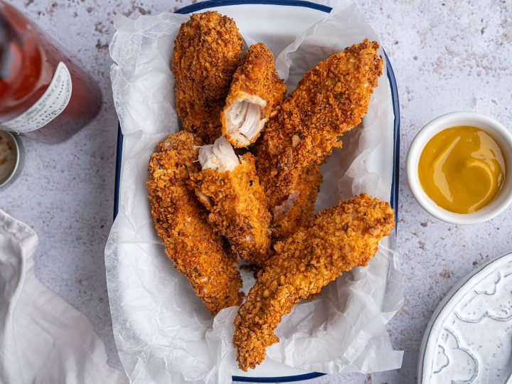

Golden Chicken Tenders

This is my favorite chicken recipe. It is quick, easy and delicious. I serve the chicken tenders with cranberry sauce, rice and spinach.
If you don't know, chicken tenders are the narrow, strip of meat loosely attached to the underside of chicken breasts. They taste exactly the same as breast meat, but are juicy and tender when cooked properly. Tenders can be pulled gently from a breast, or find them sold separately at your supermarket/butcher.
Ingredients
- 1 (9 ounce) package chicken tenderloins
- 1/2 cup finely crushed dry stuffing mix
- 2 tablespoons melted butter
Directions
- Preheat oven to 350 degrees F (175 degrees C).
- Line a 9x13 inch baking dish with foil. Rinse and pat dry the chicken and place in the baking dish.
- Combine the stuffing mix with the melted butter or margarine. Place stuffing mixture on top of the chicken tenders.
- Bake in the preheated oven for 40 minutes.